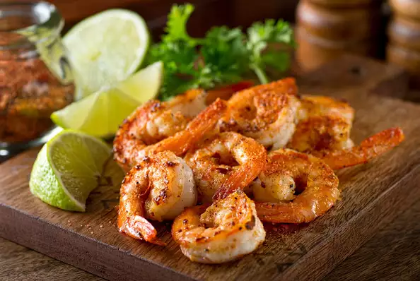

Cajun Shrimp

Description
The Cajun Shrimp is a very tasty recipe that goes really as an appetizer combined with beer.
If you really enjoy just plain well flavored shrimp this recipe is for you.
It takes 10 mins in total (5 mins to prep and 5 mins to cook) yielding a total of 4
servings.
Ingredients
- 1 teaspoon paprika
- ¾ teaspoon dried thyme
- ¾ teaspoon dried oregano
- ¼ teaspoon garlic powder
- ¼ teaspoon salt
- ¼ teaspoon ground black pepper
- ¼ teaspoon cayenne pepper, or more to taste
- 1 ½ pounds of large shrimp, peeled and deveined
- 1 tablespoon vegetable oil
Steps
- Combine paprika, thyme, oregano, garlic powder, salt, pepper, and cayenne pepper in a sealable plastic bag;
shake to mix. Add shrimp and shake to coat.
- Heat oil in a large non-stick skillet over medium high heat. Cook and stir shrimp in hot oil until they are
bright pink on the outside and the meat is no longer transparent in the center, about 4 minutes.